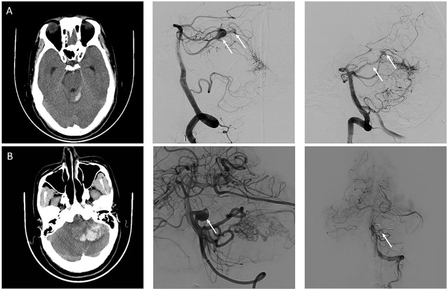
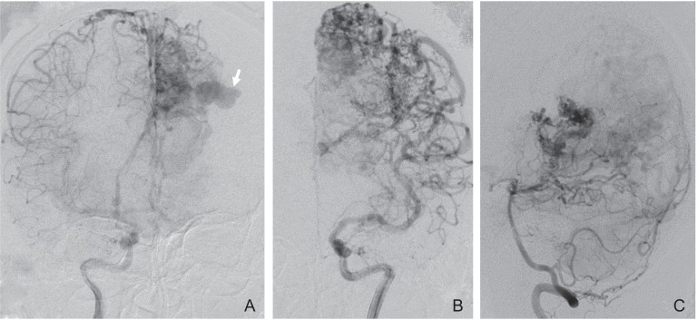
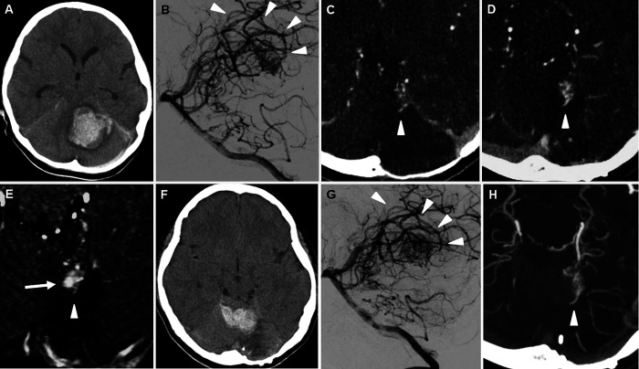
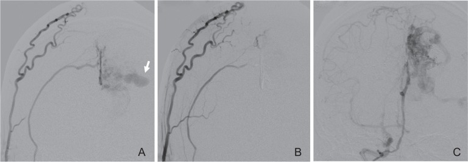
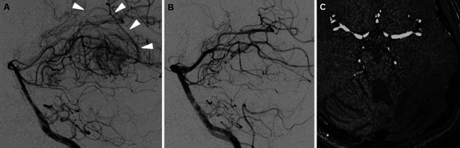

3113 — Túi phình kèm theo AVM não ở trẻ: liên quan dòng chảy & trong nidus / AVM-associated aneurysms in children
Tags: pattern:tui-phinh pattern:nidus pattern:flow-void pattern:xuat-huyet-duoi-nhen pattern:shunt-toc-do-cao vung:nao vung:mach-nao score:Spetzler-Martin score:size-ratio protocol:DSA-3D protocol:CTA protocol:MRA protocol:SWI
Mức chắc chắn (certainty): tổng hợp y văn (literature synthesis) — đoàn hệ 238 trẻ AVM của Children's Hospital of Pittsburgh 1988–2023 (J Neurosurg Pediatr 2025, PMID 39423430, không open access: chỉ dùng số từ abstract); đoàn hệ 284 AVM / 37 AVM hố sau có túi phình liên quan dòng chảy đa trung tâm Trung Quốc (Front Neurol 2025, PMC12682677, CC BY); loạt 2 trẻ AVM vỡ tái phát có túi phình MỚI sau xạ phẫu (J Neurosurg Case Lessons 2022, PMC9624159, CC BY-NC-ND); ca nút mạch đích túi phình trong nidus (J Cerebrovasc Endovasc Neurosurg 2015, PMC4663032, CC BY-NC-ND). Nhóm không có bệnh nhân của mình; dữ liệu nguy cơ vỡ chủ yếu từ người lớn, phần nhi khoa mới ở mức đoàn hệ hồi cứu, không có thử nghiệm ngẫu nhiên.
Câu chốt: Khoảng 1/5 trẻ có AVM mang kèm ít nhất một túi phình (18,5%), và một nửa số ca "AVM vỡ" thực ra là túi phình vỡ — nên câu hỏi không phải "có AVM không" mà là "túi phình này nằm ở đâu và ai chịu trách nhiệm chảy máu?". Bốn vị trí phải phân biệt trước khi can thiệp: trên cuống nuôi (feeding artery, typ II), trong nidus (intranidal, typ III), trên tĩnh mạch dẫn lưu (postnidal) và túi phình không liên quan (typ I) — vì cách xử lý và thứ tự xử lý khác nhau, và túi phình postnidal ở trẻ lại KHÔNG làm tăng xuất huyết (OR 0,36).
1. Tổng quan bệnh học – cơ chế hình ảnh (TẠI SAO)
1.1 Phân loại: vì sao "túi phình cạnh AVM" không phải một bệnh
- Typ I — không liên quan (unrelated): túi phình nằm trên mạch không nuôi nidus, là bệnh túi phình thông thường tình cờ gặp cùng AVM.
- Typ II — liên quan dòng chảy (flow-related): nằm trên đoạn gần của động mạch nuôi, phía trước nidus. Sinh lý: lưu lượng qua nidus rất lớn làm ứng suất cắt thành mạch (wall shear stress) tăng ở đoạn mạch nuôi → tái cấu trúc thành, giãn và phình. Đây là túi phình hệ quả của AVM, và khi AVM được chữa khỏi thì một số túi có thể tự thoái triển (cơ sở của chiến lược "theo dõi túi nhỏ sau khi chữa AVM").
- Typ III — trong nidus (intranidal): túi nằm trong búi mạch, thường rất khó thấy trên CTA vì bị nidus và máu tụ che; là điểm yếu thành mạch áp lực cao nhất.
- Postnidal — trên tĩnh mạch dẫn lưu: túi/giãn tĩnh mạch (venous varix) trên đường thoát. Áp lực thấp hơn nhiều so với phía động mạch.
- Bằng chứng định nghĩa: mọi phân loại trên đều dựa vào DSA (chụp mạch số hoá xoá nền); đoàn hệ Pittsburgh phân bố 49 túi phình ở 44 trẻ: 19 (38,8%) feeding artery, 8 (16,3%) intranidal, 21 (42,9%) postnidal, 1 (2,0%) không liên quan; thêm 5 trẻ có giãn tĩnh mạch (varix) (PMID 39423430).
1.2 TẠI SAO trẻ có túi phình và TẠI SAO nó vỡ
- Cơ chế huyết động: định luật Laplace cho thành mạch σ = P·r / (2t) — khi bán kính (r) tăng và thành mỏng (t giảm) thì ứng suất thành tăng theo cấp số nhân với bán kính. Vì vậy túi phình to ra là tự làm yếu thêm, và tỉ lệ kích thước túi / đường kính mạch mẹ (size ratio, SR) mô tả đúng "độ căng tương đối" đó.
- Ngưỡng định lượng (người lớn, AVM hố sau — PMC12682677, n = 37 bệnh nhân / 50 túi phình):
| Biến số | Túi phình ĐÃ vỡ (n = 22) | Túi phình CHƯA vỡ (n = 28) | p |
|---|---|---|---|
| Đường kính túi, trung vị (IQR) | 4,55 mm (3,20–7,55) | 3,00 mm (2,40–5,00) | 0,009 |
| Size ratio (SR, túi/mạch mẹ) | 2,72 (1,95–4,12) | 2,23 (1,10–2,87) | 0,021 |
| Relative size ratio (RSR, túi/nidus) | 0,24 (0,137–0,358) | 0,096 (0,063–0,129) | < 0,001 |
| Kích thước nidus AVM | 2,41 ± 1,02 cm | 3,93 ± 2,68 cm | 0,001 |
| Spetzler–Martin I–II | 81,8% (18/22) | 33,3% (5/15) | 0,013 |
- Hồi quy đa biến (PMC12682677): chỉ còn kích thước AVM — OR 0,92 (95% CI 0,84–0,99), p = 0,039 và size ratio — OR 1,66 (95% CI 1,07–2,59), p = 0,024. Nghĩa là AVM NHỎ + túi phình TO so với mạch mẹ là tổ hợp dễ vỡ — nghịch lý "AVM nhỏ nguy hiểm hơn AVM lớn" giải thích bằng tỉ lệ lưu lượng trên thể tích nidus cao hơn.
- Tỉ lệ chảy máu do túi phình: trong AVM có túi phình kèm theo, ~49,2% ca xuất huyết là do túi phình vỡ (dữ liệu tổng hợp người lớn, dẫn trong PMC12682677); trong nhóm AVM hố sau có túi phình liên quan dòng chảy, 22/37 = 59,4% ca nhập viện vì chảy máu do chính túi phình vỡ.
- NHƯNG ở trẻ, bức tranh ngược lại một phần: trong 238 trẻ, 47,7% (21/44) trẻ có túi phình nhập viện vì xuất huyết, so với 61,3% (119/194) trẻ không có túi phình (p = 0,10 — không khác biệt có ý nghĩa). Hồi quy đa biến: túi phình postnidal làm GIẢM khả năng xuất huyết — OR 0,36 (p = 0,037); nhiều tĩnh mạch dẫn lưu hơn cũng giảm (OR 0,66 mỗi tĩnh mạch, p = 0,049); trong khi dẫn lưu tĩnh mạch sâu làm TĂNG xuất huyết — OR 2,25 (p = 0,0045) (PMID 39423430). Kết luận thực dụng: ở trẻ, sự hiện diện của túi phình không tự nó là chỉ định can thiệp; phải xem loại túi phình + dẫn lưu sâu + kích thước nidus.
1.3 TẠI SAO hình ảnh trông như vậy (vật lý từng phương thức)
- CT không cản quang: máu dưới nhện (SAH) đơn thuần, KHÔNG kèm máu tụ nhu mô là kiểu chảy máu gợi ý túi phình vỡ; ngược lại máu tụ nhu mô ± máu não thất gợi ý nidus vỡ. Đây chính là tiêu chuẩn mà nghiên cứu PMC12682677 dùng để quy kết nguồn chảy máu, và là dấu hiệu định vị đầu tiên trên CT — trước cả DSA.
- CTA: nidus, động mạch nuôi giãn và tĩnh mạch dẫn lưu hiện sớm ở thì động mạch; nhưng độ phân giải không gian xấp xỉ 0,5–0,6 mm và máu tụ cạnh nidus che tổn thương → CTA âm KHÔNG loại trừ túi phình nhỏ/intranidal.
- MRI/MRA: flow void trên T2 (máu chảy nhanh rời mặt cắt), SWI/T2* thấy hemosiderin của máu cũ (dấu hiệu chảy máu trước đó nhiều đợt), MRA thấy cuống nuôi và túi lớn; MRA không đủ để loại trừ túi phình < 3 mm.
- DSA + 3D xoay: chuẩn vàng, độ phân giải xấp xỉ 0,2 mm, thấy túi phình nhỏ, cổ túi, và mạch nuôi của riêng túi — điều kiện để nút mạch "đích" (targeted embolization) mà không làm tắc nidus.
- TẠI SAO phải chụp nhiều thì: túi phình liên quan dòng chảy đổ đầy sớm và rửa nhanh (high flow), còn giãn tĩnh mạch chỉ hiện ở thì tĩnh mạch — chụp một thì dễ gọi giãn tĩnh mạch là túi phình hoặc bỏ sót túi phình thật.
2. Mẫu hình + chẩn đoán phân biệt theo vị trí (gamut)
- Túi phình trên cuống nuôi (feeding artery, typ II): nằm đoạn gần, thường ở chỗ chia nhánh hoặc góc gập của động mạch nuôi; bờ đều, cổ rõ, rửa nhanh; thường một vài túi trên cùng hệ nuôi.
- Túi phình trong nidus (intranidal, typ III): ổ đậm thuốc tròn nằm TRONG búi mạch, không tách khỏi nidus trên 2 bình diện; không thấy trên CTA ở nhiều ca; là nguồn chảy máu khi nidus vỡ.
- Giãn tĩnh mạch / túi postnidal: cấu trúc đậm thuốc hình túi hoặc hình thoi trên tĩnh mạch dẫn lưu, hiện thì tĩnh mạch, kích thước lớn hơn động mạch; không có cổ túi; không phải túi phình thật.
- Túi phình không liên quan (typ I): nằm trên mạch khác hệ nuôi, hình dạng điển hình của túi phình thường; quyết định điều trị theo tiêu chuẩn túi phình, không theo AVM.
- Gamut theo bối cảnh — "ổ đậm thuốc tròn cạnh AVM" gồm: (1) túi phình typ I/II/III; (2) giãn tĩnh mạch postnidal; (3) phình mạch (infundibulum) ở gốc nhánh — biến thể bình thường, < 3 mm, hình phễu, không có cổ; (4) giả phình do chấn thương (bờ không đều, tiền sử chấn thương); (5) túi phình nhiễm khuẩn (mycotic) — bờ mờ, nhiều ổ, có nhiễm trùng huyết; (6) búi mạch dural AVF đổ vào xoang — khác nguồn nuôi (động mạch màng não).
- Câu hỏi định vị (4 bước): (1) túi đổ đầy ở thì nào? (2) có cổ túi không? (3) mạch nuôi túi có nuôi nidus không? (4) kiểu chảy máu trên CT là SAH hay máu tụ nhu mô?
3. Bảng so sánh phân biệt (ma trận đối chiếu)
| Thực thể (entity) | Hình ảnh điển hình | Chốt vào (rule-in) | Chốt loại (rule-out) | Gợi ý xác nhận |
|---|---|---|---|---|
| Túi phình liên quan dòng chảy (typ II) | Túi trên đoạn gần động mạch nuôi, cổ rõ, rửa nhanh; thường kèm SAH đơn thuần trên CT | Có cổ túi + mạch nuôi đi vào nidus + size ratio cao | Túi không có cổ, hiện thì tĩnh mạch → không phải túi phình | DSA 3D xoay, đo SR = túi/mạch mẹ |
| Túi phình trong nidus (typ III) | Ổ đậm thuốc tròn trong búi mạch, không tách khỏi nidus | Thấy trên DSA khi bơm chọn lọc cuống nuôi; kích thước không đổi theo thì | CTA âm không loại trừ; nếu chỉ thấy trên MRA thì chưa đủ | DSA chọn lọc (superselective) + 3D |
| Giãn tĩnh mạch / postnidal | Túi/trục giãn trên tĩnh mạch dẫn lưu, không cổ, hiện thì tĩnh mạch | Nối liền với tĩnh mạch dẫn lưu, không có cổ, đổ đầy muộn | Có cổ + đổ đầy thì động mạch → là túi phình | DSA thì tĩnh mạch, MRA |
| Túi phình không liên quan (typ I) | Túi điển hình trên mạch không nuôi nidus | Mạch mang túi không liên hệ nidus trên DSA 3D | Nằm trên cuống nuôi → typ II, xử trí khác | DSA 4 mạch đầy đủ, không chỉ bơm hệ nuôi |
| Phình mạch (infundibulum) | Hình phễu < 3 mm ở gốc nhánh, không cổ | Không có cổ, không lớn dần theo thời gian | Lớn dần, có cổ, hình cầu → túi phình thật | So sánh DSA các lần, đo mm |
| Búi mạch màng não (dural AVF) | Nidus mỏng trong màng não, nuôi bởi động mạch màng não, đổ vào xoang | Nguồn nuôi từ động mạch màng não + đổ vào xoang | Nguồn nuôi là động mạch não (pial) → AVM | DSA động mạch cảnh ngoài, CTA |
| AVM có varix lớn | Nidus + tĩnh mạch dẫn lưu giãn khổng lồ | Nidus thấy rõ + varix đổ đầy muộn | Không có nidus → giãn tĩnh mạch đơn thuần | DSA, MRI T2 |

Hình nguyên bản Front Neurol 2025 (PMC12682677, CC BY 4.0): (A) người lớn đau đầu đột ngột — CT có máu dưới nhện đơn thuần, DSA thấy AVM nuôi bởi động mạch tiểu não trên trái kèm hai túi phình liên quan dòng chảy (mũi tên trắng); túi lớn 10 mm là nguồn chảy máu và được nút coil trước. (B) CT có máu tụ nhu mô tiểu não, DSA thấy túi phình liên quan dòng chảy trên động mạch tiểu não trước dưới; túi và nidus được xử lý cùng một thì (coil + Onyx).Dấu hiệu cần đọc đúng trên từng phương thức
- CT: phân biệt SAH đơn thuần (nghi túi phình) với máu tụ nhu mô ± IVH (nghi nidus); đo thể tích máu tụ và đường giữa để quyết định mổ giải ép.
- DSA: 4 mạch + 3D xoay, bơm chọn lọc từng cuống (không chỉ bơm thân chính) để phát hiện túi intranidal; đo SR = đường kính túi / đường kính trung bình mạch mẹ — ngưỡng ≥ 2 là vùng nguy cơ trong dữ liệu người lớn.
- MRI/SWI: đếm ổ hemosiderin — nhiều ổ = chảy máu tái diễn nhiều đợt, làm thay đổi chỉ định điều trị ngay cả khi lâm sàng "ổn định".

Hình nguyên bản J Cerebrovasc Endovasc Neurosurg 2015 (PMC4663032, CC BY-NC-ND 4.0): DSA động mạch cảnh trong phải (A), trái (B) và động mạch đốt sống trái (C) ở AVM thuỳ đỉnh–chẩm trái — túi phình trong nidus (mũi tên) là ổ đậm thuốc tròn nằm trong búi mạch, không tách khỏi nidus trên bất kỳ bình diện nào. Đây là tổn thương không thấy trên CTA ở nhiều ca.4. Protocol chụp + phân độ + thuật toán xử lý
4.1 Trình tự chẩn đoán
- Bước 1 — CT không cản quang ngay khi trẻ đau đầu/co giật/rối loạn ý thức: trả lời có máu không, kiểu máu nào, có thoát vị không.
- Bước 2 — CTA (hoặc MRA nếu trẻ hợp tác/không cần gây mê) để tìm nidus và mạch nuôi; không dừng lại ở CTA âm khi CT có SAH.
- Bước 3 — DSA 4 mạch + 3D xoay khi đã có AVM hoặc SAH không rõ nguồn: đây là bước duy nhất phân loại được typ I–III và postnidal.
- Bước 4 — đánh giá chức năng thần kinh + phân độ Spetzler–Martin (kích thước < 3 / 3–6 / > 6 cm, vùng chức năng, dẫn lưu tĩnh mạch sâu) và phân độ bổ sung cho trẻ (tuổi < 20 = 1 điểm, tính lan toả nidus, có chảy máu) — vì AVM trẻ thường nhỏ nhưng sâu.
4.2 Thứ tự xử lý: túi phình trước hay nidus trước?
- Nguyên tắc 1 — nguồn chảy máu được xử lý trước. Nếu CT là SAH đơn thuần và DSA quy được một túi phình cụ thể → nút/coil túi phình trước (đúng cách ca (A) trong hình trên được xử lý: coil túi 10 mm trước), rồi mới bàn nidus.
- Nguyên tắc 2 — nút "đích" (targeted) khi túi và nidus cùng một cuống: bơm chọn lọc cuống chỉ nuôi túi (ví dụ nhánh động mạch màng não giữa qua liềm trong ca PMC4663032) để tắc túi mà không tắc nidus — giữ khả năng xạ phẫu/mổ sau đó.
- Nguyên tắc 3 — xử lý cùng một thì khi thuận lợi: ca (B) trong hình trên coil túi + Onyx nidus cùng một thì vì cùng một vùng chạm tới được và trẻ đã được gây mê.
- Nguyên tắc 4 — túi postnidal không tự động can thiệp: ở trẻ, túi postnidal giảm khả năng xuất huyết (OR 0,36) → theo dõi là lựa chọn hợp lý nếu không có dấu hiệu khác (PMID 39423430).
- Nguyên tắc 5 — trẻ có AVM chưa tắc hoàn toàn phải theo dõi DSA dài hạn: trong loạt 2 ca, túi phình MỚI xuất hiện 21 năm và 6 năm 7 tháng sau xạ phẫu, và tái chảy máu 8 tháng / 2 ngày sau khi phát hiện túi mới → túi phình mới + nidus tái phát là dấu hiệu báo trước tái chảy máu (PMC9624159).
flowchart TD
A[Trẻ xuất huyết não, CT có AVM nghi ngờ] --> B[CTA hoặc MRA + SWI]
B --> C{DSA 4 mach + 3D xoay}
C --> D{Kieu chay mau tren CT}
D -->|SAH don thuan| E[Tim tui phinh nguon: do SR, co co tui]
D -->|Mau tu nhu mo| F[Nidus vo: danh gia SM va dong hoc]
E --> G{Co tui phinh xac dinh}
G -->|Co| H[Nut coil tui phinh TRUOC hoac cung thi]
G -->|Khong| F
H --> I{Nidus con lai}
I -->|Co| J[Ban cach: xa phau, mo, nut tung phan]
I -->|Khong| K[Theo doi DSA 6 va 12 thang]
F --> J
J --> L{Tac hoan toan}
L -->|Khong| M[Theo doi DSA moi 1 den 2 nam, chu y tui phinh MOI]
L -->|Co| K
4.3 Phân độ và ngưỡng định lượng dùng trong quyết định
| Thông số | Ngưỡng / giá trị | Ý nghĩa thực hành |
|---|---|---|
| Kích thước nidus | < 3 cm = 1 điểm Spetzler–Martin | AVM nhỏ + túi phình to = tổ hợp dễ vỡ (OR 0,92 mỗi cm) |
| Size ratio (SR) | ≥ 2 (vỡ: trung vị 2,72; chưa vỡ: 2,23) | SR cao = chỉ định xử lý túi mạnh hơn |
| Relative size ratio (RSR) | 0,24 (vỡ) vs 0,096 (chưa vỡ) | Túi lớn so với nidus = nguy cơ |
| Đường kính túi | 4,55 mm (vỡ) vs 3,00 mm (chưa vỡ) | Không có ngưỡng tuyệt đối an toàn ở trẻ |
| Dẫn lưu tĩnh mạch sâu | OR 2,25 cho xuất huyết | Ưu tiên điều trị khi có |
| Túi postnidal | OR 0,36 | Có thể theo dõi |
| Tuổi trong phân độ bổ sung | < 20 tuổi = 1 điểm | Trẻ có "điểm tuổi" thấp nhưng nguy cơ tích luỹ dài |
5. Biến thể bình thường và cạm bẫy
- Cạm bẫy 1 — gọi giãn tĩnh mạch là "túi phình khổng lồ": varix không có cổ, đổ đầy thì tĩnh mạch; nút coil một varix không có cổ làm tắc đường thoát duy nhất của AVM → chảy máu hoặc nhồi máu. Luôn chụp đủ thì trước khi gọi tên.
- Cạm bẫy 2 — tin CTA âm: túi intranidal 2–4 mm thường không thấy trên CTA; bỏ sót dẫn tới nút nidus mà để lại túi — đúng nguồn chảy máu ban đầu.
- Cạm bẫy 3 — "có túi phình thì phải nút": ở trẻ, sự hiện diện của túi phình không làm tăng tỉ lệ xuất huyết (47,7% vs 61,3%, p = 0,10), và túi postnidal giảm nguy cơ (PMID 39423430). Chỉ định dựa trên loại túi + SR + dẫn lưu sâu + nidus nhỏ, không dựa vào "có/không".
- Cạm bẫy 4 — bỏ theo dõi sau "chữa khỏi": trẻ có AVM tái phát 10,4–16,7% sau khi được coi là tắc hoàn toàn (tổng quan 20 đoàn hệ, PMC13216134 — xem bài 1787), và túi phình mới có thể xuất hiện 21 năm sau xạ phẫu, với tái chảy máu 8 tháng sau đó (PMC9624159). Trẻ phải theo dõi tới tuổi trưởng thành, không dừng ở 18 tuổi.
- Cạm bẫy 5 — chụp DSA quá sớm rồi kết luận "không có túi phình": trong ca thứ hai của loạt trên, DSA 1 ngày và CTA 3 ngày sau tái chảy máu đều không thấy túi phình; túi chỉ hiện 6 ngày sau chảy máu (PMC9624159). Khi lâm sàng và kiểu chảy máu gợi ý túi phình, chụp lại sau vài ngày thay vì loại trừ.
- Cạm bẫy 6 — bỏ sót nguyên nhân khác của SAH ở trẻ: túi phình nhiễm khuẩn (mycotic), bóc tách động mạch, bệnh Moyamoya, u mạch máu — mỗi thứ có hình ảnh và điều trị riêng; SAH ở trẻ luôn cần DSA, không suy luận từ AVM đã biết.
- Biến thể bình thường: phình mạch (infundibulum) < 3 mm ở gốc nhánh là biến thể; không can thiệp, chỉ theo dõi kích thước nếu có AVM kèm theo.
6. Tự lượng giá — Blind Quiz
Ca 1 — Trẻ 9 tuổi, đau đầu dữ dội đột ngột, CT có máu dưới nhện, không có máu tụ nhu mô.
- Hỏi: kiểu chảy máu trên CT gợi ý nguồn nào? Trên DSA có mấy túi phình, nằm ở đâu? Vì sao túi lớn được xử lý trước?
Bấm để hiện đáp án
- (A) CT: máu dưới nhện đơn thuần, không có máu tụ nhu mô → theo cách quy kết của nghiên cứu, nguồn chảy máu là túi phình, không phải nidus.
- DSA: AVM nuôi bởi động mạch tiểu não trên trái, kèm hai túi phình liên quan dòng chảy trên cuống nuôi (mũi tên trắng; túi lớn 10 mm).
- Xử lý: nút coil túi lớn trước vì đây là nguồn chảy máu và là điểm yếu chịu áp lực cao nhất; nidus xử lý sau theo phân độ.
- Lưu ý trung thực nguồn: hình này là bệnh nhân người lớn trong bài về AVM hố sau — dùng để dạy nguyên lý, không phải ca nhi.
- Nguồn ảnh: Front Neurol 2025 (PMC12682677, CC BY 4.0).
Ca 2 — Bé trai 5 tuổi, xuất huyết tiểu não trái; AVM được xạ phẫu nhưng không tắc hoàn toàn. Chụp lại nhiều năm sau.

- Hỏi: đọc lần lượt A→H. Ở hình nào xuất hiện túi phình mới? Túi phình mới xuất hiện sau bao lâu, và nó dự báo gì?
Bấm để hiện đáp án
- A: CT máu tụ tiểu não trái (vỡ lần đầu). B: DSA sau xạ phẫu 2 năm — nidus còn lại, mũi tên nhọn chỉ tĩnh mạch dẫn lưu.
- C–D: CTA sau 3 năm 8 tháng rồi 6 năm 7 tháng — nidus tái phát và lớn dần. E: túi phình MỚI (mũi tên) ở nidus còn lại, phát hiện 7 năm sau xạ phẫu. F: CT tái chảy máu. G–H: DSA/CTA 1 ngày và 3 ngày sau tái chảy máu KHÔNG thấy túi phình; túi chỉ hiện trên DSA 6 ngày sau chảy máu (hình 4A trong bài).
- Bài học: túi phình mới + nidus tái phát = dấu hiệu báo trước tái chảy máu (ca này tái chảy máu 5 tháng sau khi phát hiện túi mới; ca thứ nhất trong loạt có túi mới 21 năm sau xạ phẫu và tái chảy máu 8 tháng sau đó). DSA âm ngay sau chảy máu KHÔNG loại trừ túi phình — túi có thể bị máu tụ/nidus che và chỉ hiện khi chụp lại muộn hơn.
- Nếu không tắc hoàn toàn → theo dõi DSA dài hạn, kể cả khi đã trưởng thành.
- Nguồn ảnh: J Neurosurg Case Lessons 2022 (PMC9624159, CC BY-NC-ND 4.0), ảnh nguyên bản.
Ca 3 — Trẻ 7 tuổi, AVM thuỳ đỉnh–chẩm trái, có một ổ đậm thuốc tròn nằm TRONG búi mạch.

- Hỏi: ổ đậm thuốc đó là túi phình loại nào? Vì sao không nút cả nidus mà chỉ nút "đích"? Hình B–C khác A ở đâu?
Bấm để hiện đáp án
- Ổ tròn nằm trong búi mạch, không tách khỏi nidus → túi phình trong nidus (intranidal, typ III) — điểm yếu thành mạch chịu áp lực cao nhất.
- Nút đích: ca này túi được nuôi chủ yếu bởi động mạch màng não giữa qua liềm — bơm chọn lọc nhánh đó để tắc túi mà vẫn giữ nguyên nidus cho xạ phẫu/mổ sau. Nút toàn bộ nidus bằng một lần sẽ mất đường tiếp cận và tăng nguy cơ biến chứng.
- B–C: sau nút, túi không còn đổ đầy trên cả bơm động mạch cảnh ngoài và cảnh trong; nidus vẫn còn — đúng mục tiêu "kiểm soát nguồn chảy máu trước".
- Nguồn ảnh: J Cerebrovasc Endovasc Neurosurg 2015 (PMC4663032, CC BY-NC-ND 4.0), ảnh nguyên bản.
Ca 4 — Trẻ 12 tuổi, AVM đã nút một phần; DSA 6 tháng sau cho thấy nidus còn lại nhỏ, không có túi phình.

- Hỏi: có cần xử lý tiếp ngay không? Nếu chọn theo dõi thì mốc chụp lại là bao lâu, và theo dõi cái gì?
Bấm để hiện đáp án
- Nidus còn lại không có túi phình và trẻ không triệu chứng: có thể theo dõi hoặc xạ phẫu/mổ tuỳ vị trí và phân độ — nhưng phải chụp lại, vì AVM trẻ tái phát 10,4–16,7% sau khi được coi là tắc hoàn toàn.
- Mốc: DSA 6 và 12 tháng sau điều trị, sau đó mỗi 1–2 năm nếu còn nidus; theo dõi tới tuổi trưởng thành. Mỗi lần chụp phải trả lời 2 câu: nidus có lớn lên không? có túi phình MỚI không?
- Hình B–C: sau nút, nidus mờ đi rõ; MRA sau mổ không còn nidus — nhưng vẫn cần DSA xác nhận vì MRA bỏ sót tổn thương nhỏ.
- Nguồn ảnh: J Neurosurg Case Lessons 2022 (PMC9624159, CC BY-NC-ND 4.0), ảnh nguyên bản.
Bài liên quan chéo
- 1787 – AVM não ở trẻ đã vỡ — phân tầng cấp cứu, Spetzler–Martin, tái xuất huyết
- 257 – Theo dõi tái phát sau can thiệp túi phình — lịch chụp lại sau can thiệp
- 216 – Dị dạng mạch CVST — bối cảnh mạch máu não trẻ
- 746 – CM-AVM (RASA1/EPHB4) — AVM đa ổ, hội chứng di truyền
- 745 – HHT ở trẻ: tầm soát AVM phổi–não — tầm soát AVM đa hệ
- 200 – Tổng quan hệ Thần kinh — bản đồ hệ và cách đọc
Ảnh
- Nguồn và giấy phép từng ảnh:
images/CREDITS.md. Ba ảnh CC BY-NC-ND dùng nguyên bản, không cắt/không ghép; một ảnh CC BY dùng nguyên bản.
Không dùng để chẩn đoán độc lập khi chưa có người hướng dẫn.